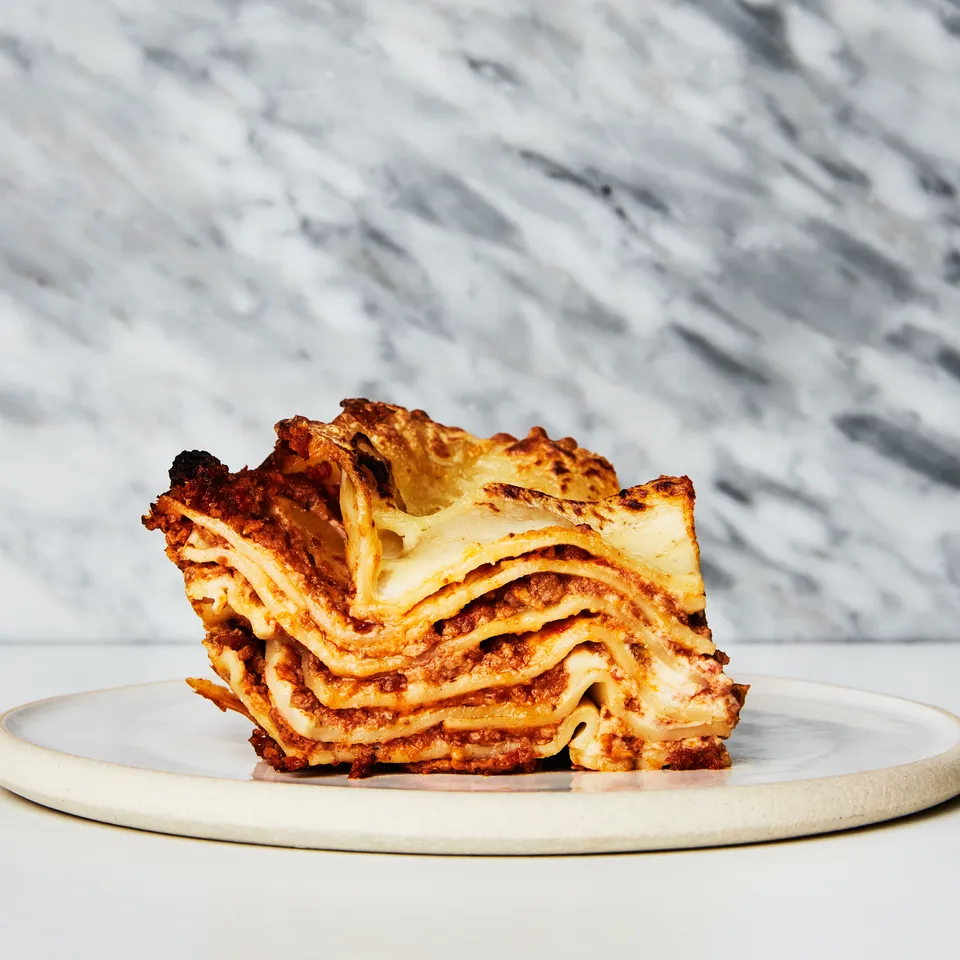

LASAGNA

THE INFAMOUS LASAGNA!
Lasagna looks very tasty.
This meal is definately spanish I guess.
Let's move on to what these odin people want us to do lol.
Ingredients
- Lasagna Noodles: This recipe uses regular (not no boil) lasagna noodles.
- Onion: Adds flavor to the sauce.
- Ground Beef: My go-to for a lasagna meat sauce. If desired, you can add 1/2 pound of Italian sausage along with the ground beef. The Italian sausage will add even more flavor.
- Garlic: You can’t beat the flavor of fresh garlic!
- Marinara Sauce: You’ll need 48 ounces (two 24-ounce jars) of store-bought sauce. If you want to use homemade marinara sauce, you’ll need 6 cups of sauce.
- Salt, Pepper and Italian Seasoning: These add the perfect amount of seasoning to the lasagna. You can also add a pinch or two of red pepper flakes for a bit of heat.
- Fresh Parsley: Brightens up the flavors; you can omit it if you don’t have any on hand.
- Egg: Helps to bind the ricotta cheese, which thickens it and prevents it from getting soupy as it bakes.
- Ricotta Cheese: Adds creaminess and cheesy flavor. If you don’t care for ricotta, you can omit the ricotta and egg from the recipe. You can also substitute cottage cheese if needed and omit the egg.
- Mozzarella Cheese: A classic ingredient in traditional lasagna, the mozzarella melts wonderfully as it bakes. Look for a ball of part skim or whole milk mozzarella, not fresh mozzarella.
- Parmesan Cheese: Brings more bold cheesy flavor.
Steps
- Boil the lasagna noodles.
- Brown the ground beef with onion and garlic.
- To the pan, add the marinara sauce, Italian seasoning and fresh parsley. Simmer the sauce for 10 to 15 minutes.
- In a bowl, stir together the ricotta cheese and an egg. Shred the mozzarella cheese.
- Layer the lasagna.
- Bake until hot and bubbly.